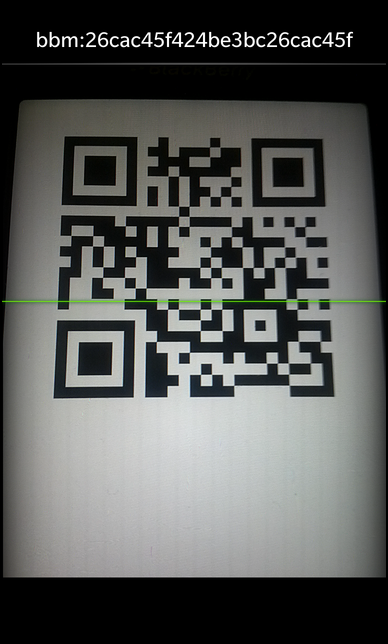

Barcode Reader Example
Files:
- camera/barcodereader/assets/main.qml
- camera/barcodereader/src/main.cpp
- camera/barcodereader/barcodereader.pro
- camera/barcodereader/translations/barcodereader.pro
Description
The Barcode Reader example allows the user to scan a QR Code with the camera and view the decoded textual representation.


Overview
In this example we'll learn how to use the Camera and BarcodeDetector classes of the BB10 framework to scan a QR code and decode it.
The UI
The UI of this sample application consists of the Camera control only, which shows a preview of the current camera viewport.
// The camera preview control Camera { id: camera horizontalAlignment: HorizontalAlignment.Fill verticalAlignment: VerticalAlignment.Fill onCameraOpened: { // Apply some settings after the camera was opened successfully getSettings(cameraSettings) cameraSettings.focusMode = CameraFocusMode.ContinuousAuto cameraSettings.shootingMode = CameraShootingMode.Stabilization applySettings(cameraSettings) // Start the view finder as it is needed by the barcode detector camera.startViewfinder() } onViewfinderStarted: { // Setup the barcode detector with the camera object now barcodeDetector.camera = camera } attachedObjects: [ CameraSettings { id: cameraSettings } ] }
The Camera control shows the video stream that is currently provided by the camera viewport. To enable the Camera control, we invoke the open() method on it after the start-up animation has started.
onStarted: { camera.open() }
If the open() call was successful, the cameraOpened() signal is emitted, which we react to in the onCameraOpened() signal handler. There we retrieve the current settings of the Camera object, configure them to improve the scanning of barcodes and apply them back on the Camera object. Afterwards we start the view finder of the camera, since that one is needed by the BarcodeDetector to work correctly.
If the view finder was started successfully, the viewfinderStarted() signal is emitted. We react to it by setting the Camera object on the BarcodeDetector object. Now the barcode detector automatically scans the video stream to detect any QR code.
attachedObjects: [ BarcodeDetector { id: barcodeDetector onBarcodeDetected: { if (resultLabel.text != data) { resultLabel.text = data; resultArea.visible = true; scannedSound.play() } } }, SystemSound { id: scannedSound sound: SystemSound.GeneralNotification } ]
When a QR code is detected, the BarcodeDetector emits the barcodeDetected() signal with the decoded textual data as parameter. In our example we update the 'text' property of a Label with these data and play a sound to inform the user that a new barcode has been read.